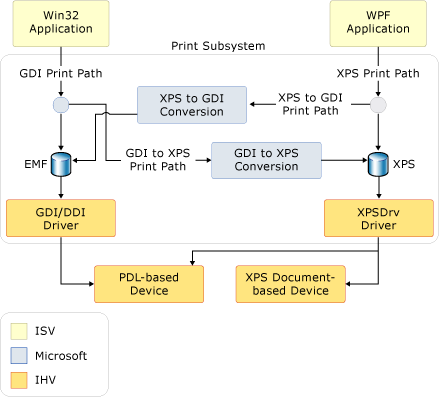

Общие сведения о печати
С помощью Microsoft .NET Framework, разработчики приложений с помощью Windows Presentation Foundation (WPF) имеют новый набор печати и управления печатью API - интерфейсы. В Windows Vista некоторые из усовершенствований управления печатью также доступны для разработчиков, создающих приложения Windows Forms, и разработчиков, использующих неуправляемый код. В основе этой новой функциональности лежит новый формат файла Формат XPS (XML Paper Specification) и способ печати XPS.
В этом разделе содержатся следующие подразделы.
О формате XPS
XPS — Это формат электронного документа, формат файла очереди и язык описания страницы. Это формат открытого документа, который использует XML, Спецификации OPC (Open Packaging Conventions) и другие отраслевые стандарты для создания кроссплатформенных документов. XPS упрощает процесс создания, общие, печати, просматривать и архивирования цифровых документов. Дополнительные сведения о XPS, см. в разделе документы XPS.
Несколько методов печати содержимого на основе XPS с помощью WPF демонстрируются в разделе Печать XPS-файлов программным способом. Ссылки на эти примеры могут оказаться полезными при просмотре содержимого этого раздела. (Разработчикам неуправляемого кода следует изучить документацию по MXDC_ESCAPE функция. Windows Forms разработчики приложений должны использовать API в System.Drawing.Printing пространства имен, который не поддерживает полный XPS способ печати, но также поддерживает гибридные GDI в XPS путь печати. См. раздел Архитектура способа печати ниже.)
Способ печати XPS
Формат XPS (XML Paper Specification) — Это новый способ печати Windows компонент, который переопределяет способ обработки печати в приложениях Windows. Поскольку XPS может заменить язык представления документов (например, RTF), формат очереди печати (например, WMF) и язык описания страницы (например, PCL или Postscript), новый способ печати поддерживает формат XPS от публикации приложения до последней обработки в драйвере печати или устройстве печати.
Способ печати XPS построен на основе модели драйвера печати XPS (XPSDrv), которая предоставляет разработчикам различные преимущества, такие как печать Режим WYSIWYG (режим точного отображения), улучшенная поддержка цвета и значительно повышенная производительность печати. (Сведения о XPSDrv см. в разделе документации Windows Driver Kit.)
Операция диспетчера очереди печати для XPS документов в основном одинаков как в предыдущих версиях Windows. Однако она была усовершенствована для поддержки способа печати XPS в дополнение к существующему способу печати GDI. Новый способ печати использует файл очереди XPS. Хотя драйверы принтеров пользовательского режима, написанные для предыдущих версий Windows, будут продолжать работать, XPS для использования способа печати XPS необходим драйвер принтера (XPSDrv).
Преимущества способа печати XPS являются существенными и включают следующее.
WYSIWYG поддержка печати
Встроенная поддержка дополнительных цветовых профилей, включая 32 бита на канал (bpc), CMYK, именованные цвета, n-краски и встроенную поддержку прозрачности и градиентов.
Повышенная производительность печати для .NET Framework, так и Win32 приложений на основе.
Формат XPS отраслевого стандарта
Для базовых сценариев печати доступен простой и понятный API с одной точкой входа для пользовательского интерфейса, конфигурации и отправкой задания. Для расширенных сценариев добавлена дополнительная поддержка настройки пользовательский интерфейс (или не ИП вообще), синхронной или асинхронной печати и возможностей пакетной печати. Оба параметра обеспечивают поддержку печати в режиме полного или частичного доверия.
XPS была разработана с учетом возможности расширения. С помощью инфраструктуры расширяемости функции и возможности можно добавлять в XPS модульным способом. Функции расширяемости включают следующее.
Схема печати. Общая схема обновляется регулярно и позволяет быстро расширять возможности устройства. (См. PrintTicket и PrintCapabilities ниже.)
Расширяемый конвейер фильтра. Конвейер фильтра драйвера принтера XPS (XPSDrv) был разработан для включения как прямой, так и масштабируемой печати документов XPS. Дополнительные сведения см. в разделе драйверы принтера XPSDrv.
Архитектура способа печати
Хотя оба Win32 и приложения .NET Framework поддерживают XPS, Win32 и приложения Windows Forms используют GDI для XPS преобразования для создания XPS форматированное содержимое для XPSдрайвер принтера (XPSDrv). Эти приложения не обязаны использовать способ печати XPS, и можно продолжать использовать печать на основе EMF (Enhanced Metafile —расширенный метафайл). Однако большинство функций и усовершенствований XPS доступно только приложениям, предназначенным для способа печати XPS.
Чтобы включить использование принтеров на основе XPSDrv Win32 и приложения Windows Forms, XPS драйвер принтера (XPSDrv) поддерживает преобразование GDI для XPS формат. Модель XPSDrv также предоставляет преобразователь для XPS в формат GDI, чтобы приложения Win32 могли печатать документы XPS. Для WPF приложения, преобразование XPS для GDI формат выполняется автоматически Write и WriteAsync методы XpsDocumentWriter каждый раз, когда целевой очереди печати операции записи не поддерживает драйвер XPSDrv. (Приложения Windows Forms не удается выполнить печать XPS документов.)
На следующем рисунке изображена подсистема печати и определяет части, предоставляемые Майкрософти части, определенные поставщиками программного обеспечения и оборудования:

Базовая печать XPS
WPF определяет как базовый и расширенный API. Для приложений, которым не требуется настройка расширенной печати или доступ к полному набору функций XPS, доступна базовая поддержка печати. Базовая поддержка печати предоставляется с помощью элемента управления диалогового окна печати, который требует минимальной конфигурации и представляет знакомый ИП. С помощью этой упрощенной модели печати доступны многие функции XPS.
PrintDialog
Элемент управления System.Windows.Controls.PrintDialog предоставляет единую точку входа для ИП, конфигурации и отправки задания XPS. Сведения о том, как создать и использовать элемент управления, см. в разделе Вызов диалогового окна печати.
Расширенная печать XPS
Для доступа к полному набору функций XPS необходимо использовать API расширенной печати. Некоторые соответствующие API более подробно описываются ниже. Полный список XPS способ печати API - интерфейсы, см. в разделе System.Windows.Xps и System.Printing ссылки на пространства имен.
PrintTicket и PrintCapabilities
PrintTicket И PrintCapabilities классы являются основой дополнительных XPS функции. Оба типа объектов представляют собой форматированные структуры XML возможностей печати, таких как сортировка, двусторонняя печать, сшивание и т. д. Эти структуры определяются схемой печати. Объект PrintTicket указывает принтеру, как обрабатывать задание печати. Класс PrintCapabilities определяет возможности принтера. Запрашивая возможности принтера, можно создать PrintTicket, который использует все преимущества поддерживаемых возможностей принтера. Аналогичным образом можно избежать неподдерживаемых функций.
В следующем примере демонстрируется, как запрашивать PrintCapabilities принтера и создавать PrintTicket с помощью кода.
Warning
It looks like the sample you are looking for does not exist.
// ---------------------- GetPrintTicketFromPrinter -----------------------
/// <summary>
/// Returns a PrintTicket based on the current default printer.</summary>
/// <returns>
/// A PrintTicket for the current local default printer.</returns>
private PrintTicket GetPrintTicketFromPrinter()
{
PrintQueue printQueue = null;
LocalPrintServer localPrintServer = new LocalPrintServer();
// Retrieving collection of local printer on user machine
PrintQueueCollection localPrinterCollection =
localPrintServer.GetPrintQueues();
System.Collections.IEnumerator localPrinterEnumerator =
localPrinterCollection.GetEnumerator();
if (localPrinterEnumerator.MoveNext())
{
// Get PrintQueue from first available printer
printQueue = (PrintQueue)localPrinterEnumerator.Current;
}
else
{
// No printer exist, return null PrintTicket
return null;
}
// Get default PrintTicket from printer
PrintTicket printTicket = printQueue.DefaultPrintTicket;
PrintCapabilities printCapabilites = printQueue.GetPrintCapabilities();
// Modify PrintTicket
if (printCapabilites.CollationCapability.Contains(Collation.Collated))
{
printTicket.Collation = Collation.Collated;
}
if ( printCapabilites.DuplexingCapability.Contains(
Duplexing.TwoSidedLongEdge) )
{
printTicket.Duplexing = Duplexing.TwoSidedLongEdge;
}
if (printCapabilites.StaplingCapability.Contains(Stapling.StapleDualLeft))
{
printTicket.Stapling = Stapling.StapleDualLeft;
}
return printTicket;
}// end:GetPrintTicketFromPrinter()
Warning
It looks like the sample you are looking for does not exist.
PrintServer и PrintQueue
Класс PrintServer представляет сетевой сервер печати, а класс PrintQueue представляет принтер и связанную с ним очередь выходных заданий. Вместе эти API - интерфейсы обеспечивают возможность расширенного управления заданиями печати сервера. Объект PrintServer или один из его производных классов используется для управления PrintQueue. Метод AddJob используется для вставки нового задания печати в очередь.
В следующем примере демонстрируется создание LocalPrintServer и доступ к его PrintQueue по умолчанию с помощью кода.
// -------------------- GetPrintXpsDocumentWriter() -------------------
/// <summary>
/// Returns an XpsDocumentWriter for the default print queue.</summary>
/// <returns>
/// An XpsDocumentWriter for the default print queue.</returns>
private XpsDocumentWriter GetPrintXpsDocumentWriter()
{
// Create a local print server
LocalPrintServer ps = new LocalPrintServer();
// Get the default print queue
PrintQueue pq = ps.DefaultPrintQueue;
// Get an XpsDocumentWriter for the default print queue
XpsDocumentWriter xpsdw = PrintQueue.CreateXpsDocumentWriter(pq);
return xpsdw;
}// end:GetPrintXpsDocumentWriter()
Warning
It looks like the sample you are looking for does not exist.
XpsDocumentWriter
Объект XpsDocumentWriter и множество его методов Write и WriteAsync используются для записи документов XPS в PrintQueue. Например, метод Write(FixedPage, PrintTicket) используется для синхронного вывода документа XPS и PrintTicket. Метод WriteAsync(FixedDocument, PrintTicket) используется для асинхронного вывода документа XPS и PrintTicket.
В следующем примере показывается, как создать XpsDocumentWriter с помощью кода.
// -------------------- GetPrintXpsDocumentWriter() -------------------
/// <summary>
/// Returns an XpsDocumentWriter for the default print queue.</summary>
/// <returns>
/// An XpsDocumentWriter for the default print queue.</returns>
private XpsDocumentWriter GetPrintXpsDocumentWriter()
{
// Create a local print server
LocalPrintServer ps = new LocalPrintServer();
// Get the default print queue
PrintQueue pq = ps.DefaultPrintQueue;
// Get an XpsDocumentWriter for the default print queue
XpsDocumentWriter xpsdw = PrintQueue.CreateXpsDocumentWriter(pq);
return xpsdw;
}// end:GetPrintXpsDocumentWriter()
Warning
It looks like the sample you are looking for does not exist.
Методы AddJob также предоставляют способы печати. Дополнительные сведения см. в разделе Печать XPS-файлов программным способом. .
Способ печати GDI
Хотя WPF приложения поддерживают XPS способ печати Win32 и приложений Windows Forms также можно использовать преимущества некоторых XPS функции. Драйвер принтера XPS (XPSDrv) может преобразовать GDI на основе выходных данных в формат XPS. Для более сложных сценариев поддерживается настраиваемое преобразование содержимого с помощью конвертера документов XPS Microsoft (MXDC). Аналогичным образом WPF приложения могут выполнять вывод GDI способ печати путем вызова одного из Write или WriteAsync методы XpsDocumentWriter и назначения принтер XpsDrv в качестве целевого объекта очереди печати.
Для приложений, которым не требуется функциональность или поддержка XPS, текущий способ печати GDI остается неизменным.
- Дополнительные справочные материалы по GDI печать пути и различных XPS параметры преобразования, см. в разделе конвертера документов XPS Microsoft (MXDC) и драйверы принтера XPSDrv.
Модель драйвера XPSDrv
Способ печати XPS повышает эффективность очереди печати путем использования XPS в качестве собственного формата очереди печати при печати в принтер или драйвер с поддержкой XPS. Упрощенный процесс постановки в очередь избавляет от необходимости создания промежуточных файлов очередей, таких как файл данных EMF, до помещения документа в очередь. Благодаря меньшим размерам файлов очереди способ печати XPS может сократить сетевой трафик и повысить производительность печати.
EMF является закрытым форматом, представляющим вывод приложения как ряд вызовов в GDI для служб обработки. В отличие от EMF, формат очереди XPS представляет фактический документ без необходимости дальнейшей интерпретации при выводе в драйвер принтера на основе XPS (XPSDrv). Драйверы могут работать непосредственно с данными в этом формате. Эта возможность позволяет избежать преобразования данных и цветового пространства, необходимого при использовании файлов EMF и драйверов печати на основе GDI.
Размеры файлов очереди обычно уменьшаются при использовании документов XPS, предназначенных для драйвера принтера XPS (XPSDrv), по сравнению с их эквивалентами EMF; однако бывают следующие исключения.
Очень сложная, многоуровневая или неэффективно созданная векторная графика может быть больше, чем растровая версия того же графического объекта.
Для отображения экрана XPS-файлы внедряют шрифты устройства, а также шрифты на компьютере; тогда как файлы очереди GDI не внедряют шрифты устройства. Но оба типа шрифтов имеют поднаборы (см. ниже), и драйверы принтера могут удалить шрифты устройства до передачи файла на принтер.
Уменьшение размера очереди выполняется посредством нескольких механизмов.
Поднабор шрифта. В файле XPS хранятся только символы, используемые в документе.
Поддержка расширенной графики. Встроенная поддержка прозрачности и примитивов градиента позволяет избежать растризации содержимого в документе XPS.
Идентификация общих ресурсов. Ресурсы, которые используются несколько раз (например, изображение, представляющее эмблему организации), рассматриваются как общие ресурсы и загружаются только один раз.
Сжатие ZIP. Все документы XPS используют сжатие ZIP.